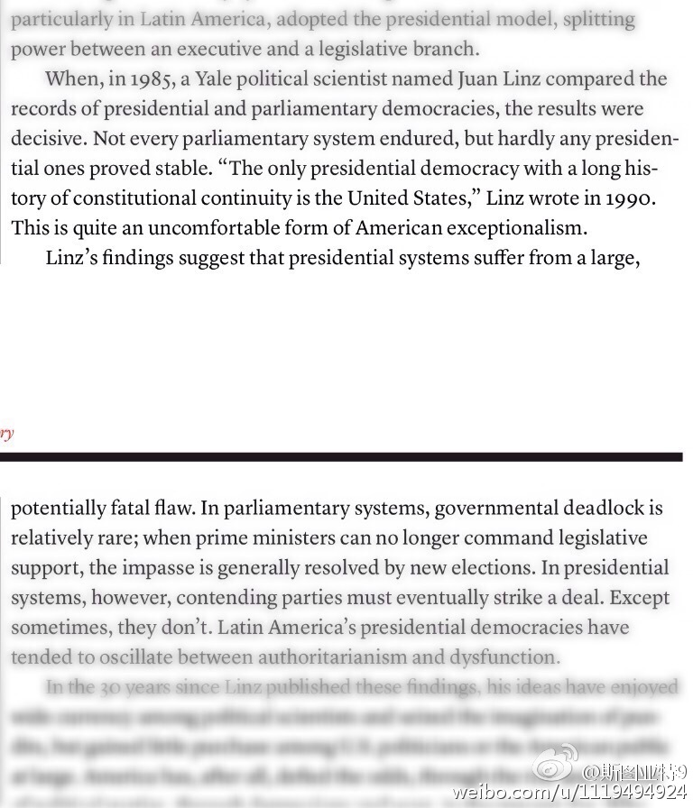

“不是每个代议制体制都能持久，但总统制就几乎没有能保持稳定的。” America’s Fragile Constitution 这篇文章介绍的观点认为，相比代议制民主，美国宪法规定的立法总政权分立的总统制先天就是有缺陷的。如最近预算案的僵局，正是缺陷的体现。 
这篇文章说西方启蒙时代的哲学家休谟受到了佛教思想的影响：How David Hume Helped Me Solve My Midlife Crisis 说来佛教很早就强调主客二分（或者按照政治课的讲法叫主观唯心），而西方启蒙怀疑论也强调主客对立的，确实是蛮契合的。
 America’s Fragile Constitution 这篇文章介绍的观点认为，相比代议制民主，美国宪法规定的立法总政权分立的总统制先天就是有缺陷的。如最近预算案的僵局，正是缺陷的体现。
America’s Fragile Constitution 这篇文章介绍的观点认为，相比代议制民主，美国宪法规定的立法总政权分立的总统制先天就是有缺陷的。如最近预算案的僵局，正是缺陷的体现。